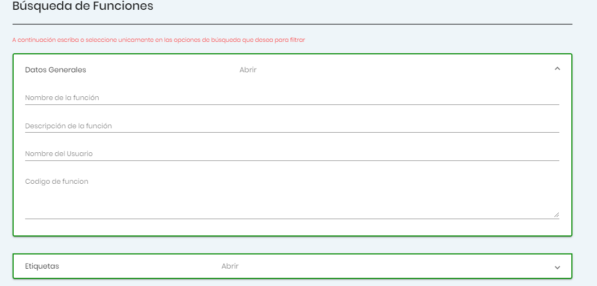

Importación del núcleo de la librería
El núcleo de la librería consta básicamente de una función que permite cargar
las funciones deseadas. Dicha
función tiene como nombre
importarDesdeJDL . A continuación
se presenta un ejemplo de uso:
En la imagen anterior se puede visualizar la importación del núcleo de la
librería. Y en el ejemplo se está
importando la función con el identificador 45.
Básicamente se requiere una etiqueta script cuyo valor en el atributo src sea
https://dynamiclibraryjdl.herokuapp.com/JDLCore . Esto
cargará la función
importarDesdeJDL que recibe como
parámetros los identificadores de las funciones
a importar.
Se recomienda utilizar la función
importarDesdeJDL una vez que se
tiene la seguridad de que la página se ha cargado totalmente. De
lo contrario es posible que la función aún no se haya cargado y si se intenta
utilizar se obtenga un error debido a que
se intenta referenciar a una función que no existe.
NOTA: Si se requiere importar más de una función se debe llamar a la
función de la siguiente manera
importarDesdeJDL( idFuncion, idFuncion, idFuncion ).
Importación individual de funciones
La importación individual de funciones se realiza a través de un link que se
debe agregar al atributo src de una etiqueta
script. A continuación se presenta un ejemplo de uso:
En el ejemplo la función a importar es aquella cuyo identificador es igual a
45. El nombre de la función importada es
funcion1 y debe utilizarse únicamente si la página se ha cargado por
completo para tener mayor seguridad con respecto
a que la función se cargó de manera correcta en la página. La función
importada procesa un arreglo y retorna un valor
que para fines de la documentación no posee relevancia.
Registro de funciones
Para registrar una función en la librería de javascript dinámica se debe especificar la siguiente información:
- Nombre de la función: En JDL aspiramos a la excelencia. Por lo que solicitamos a las
personas que utilicen el sistema que utilicen nombres representativos para sus funciones. Ya que esto facilita
la búsqueda
de la misma.
- Descripción de la función:
Breve y concisa. Que considere todos los aspectos de relevancia con respecto al cómo opera la función.
- Código javascript:
Código fuente de la función. Utilizar nombres de variables representativos.
- Etiquetas:
Se trata de una categoría para la función. Seleccionar la o las categorías
indicadas para su función provocará que está sea fácil de encontrar. El sistema posibilita que indique etiquetas
tan solo con
seleccionarlas. Si la etiqueta que desea no se encuentra en la lista de etiquetas puede optar por ingresar una,
siguiendo siempre
el estándar de utilizar la primera letra en mayúscula y el resto en minúsculas.
- Dependencias:
En caso de que su función necesite utilizar otra función conocida por el
sistema para operar deberá indicarlo a través de la interfaz. Solo debe seleccionar aquellas funciones de las
que depende su función,
de esta manera el sistema podrá cargar todas las dependencias cuando su función sea importada en cualquier
página web.
A continuación se adjuntan algunas imágenes que aluden al registro de funciones:
Edición de funciones
Existe la posibilidad de modificar cada una de las funciones del sistema. No obstante, deben considerarse los
siguientes
aspectos:
- Al editar una función, el sistema le cargará automáticamente toda la información de la misma. Esto incluye el
nombre, descripción, código javascript, las etiquetas y dependencias. Así, queda en manos del usuario
el eliminar o agregar etiquetas y/o dependencias y la manipulación de los demás datos de la función.
- Cada edición de la función implica la generación de una nueva. Al editar una función se crea una versión de
la misma que
se diferencia por los cambios realizados. De esta manera la cantidad de versiones que puede tener una función
corresponde
a la cantidad de veces que haya sido editada.
Búsqueda de funciones
En el caso de la búsqueda de funciones, se podrá realizar un filtrado muy
completo sobre todas las funciones existentes en el sistema. Es posible conocer el código
javascript, la url de importación y las versiones para cada una de las funciones registradas.
Para ello se proporciona una vista similar a la siguiente, en donde
solo será cuestión de ingresar los datos o seleccionar las opciones
disponibles para asi lograr hallar la función que requiere.
